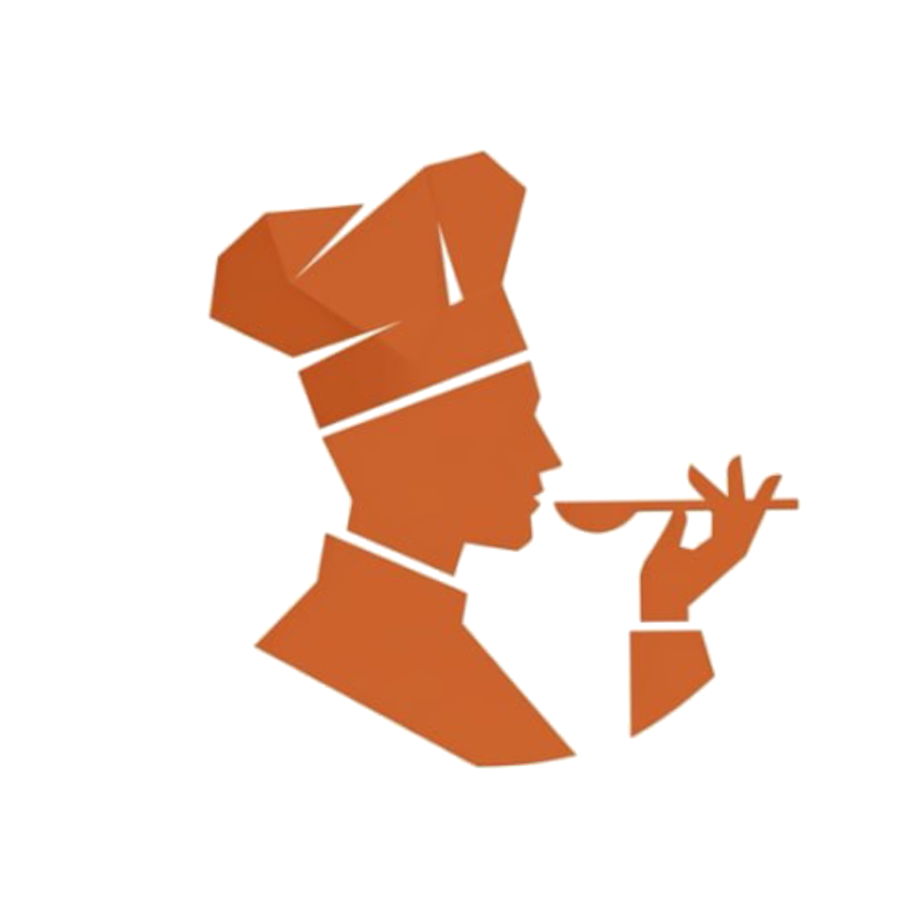

Выпуск #1 • Май 2026
Сезон огня
Гриль, мангал и открытый огонь

4 эксклюзивных рецепта от шефов клуба, секреты идеального гриля, результаты майского челленджа и рейтинг самых активных участников
ПЕРВЫЙ ВЫПУСК
Содержание
Что в этом выпуске
Слово от шефа: Алексей Козлов о сезоне гриляОткрыто
Лайфхак: Как определить температуру гриля рукойОткрыто
Рецепт: Стейк рибай с зелёным масломОткрыто
Топ-3 блюда участников маяОткрыто
Интервью: Дмитрий Волков о стажировке в РимеОткрыто
Результаты челленджа «Бургер мечты»Открыто
Рейтинг: Топ-10 участников маяОткрыто
Анонсы: Что ждёт в июнеОткрыто
🔒 Рецепт: Томагавк на кости с дымкомДля участников
🔒 Рецепт: Овощи-гриль с соусом чимичурриДля участников
🔒 Рецепт: Тирамису с кофейным ликёромДля участников
Слово от шефа
«Май — это когда кухня переезжает на улицу»

Друзья, наступил мой любимый месяц. Тот самый, когда можно достать мангал, разжечь угли и почувствовать этот запах — дым, раскалённый металл, мясо. Для меня сезон гриля — это не про шашлык из магазина. Это про уважение к огню и продукту.
За 15 лет на профессиональной кухне я понял одну вещь: огонь не прощает торопливости. Раскалённая решётка, правильная температура, терпение. Три минуты с одной стороны, три с другой. И никаких вилок — только щипцы. Проколол мясо — потерял соки.
Хороший стейк — это 20% техника и 80% терпение. Не трогай мясо, пока оно не будет готово тебя отпустить от решётки.
В этом выпуске я делюсь своим фирменным рецептом рибая с зелёным маслом. Это блюдо, которое я готовлю дома для семьи каждые выходные. Простое, но идеальное.
Хорошего вам мая. И помните — лучший ресторан — это ваш двор.
Лайфхак месяца
Как определить температуру гриля рукой

Не нужен термометр. Держите ладонь на высоте 10 см над решёткой и считайте секунды:
🔥
1-2 секунды — высокий жар (260°C+). Стейки, бургеры.
🔥
3-4 секунды — средний жар (200°C). Курица, рыба.
🔥
5-6 секунд — низкий жар (150°C). Овощи, медленная готовка.
Если можете держать руку 7+ секунд — угли остыли, пора подбросить.
Рецепт месяца
Стейк рибай с зелёным маслом

Ингредиенты
Рибай — 2 стейка (300 г каждый)
Масло сливочное — 100 г
Петрушка — пучок
Чеснок — 3 зубчика
Лимон — 1/2
Соль крупная
Перец чёрный
Приготовление
- Зелёное масло: размягчённое масло + мелко нарубленная петрушка + тёртый чеснок + цедра лимона + щепотка соли. Скатать в колбаску в пищевой плёнке, убрать в морозилку на 20 мин.
- Стейки достать из холодильника за 40 минут. Промокнуть бумажным полотенцем. Обильно посолить и поперчить.
- Гриль на максимальный жар (рука выдерживает 1-2 секунды). Решётку смазать маслом.
- Стейк на решётку — 3 минуты, не трогать! Перевернуть — ещё 3 минуты для medium rare.
- Снять, положить на доску. Шайба зелёного масла сверху. Накрыть фольгой. Отдых 5 минут.
Секрет: масло тает на горячем стейке и создаёт натуральный соус. Никакого кетчупа, никогда.
Топ-3 блюда участников
Лучшие фото-отчёты мая
1
Елена Смирнова — Ягнёнок с розмарином на гриле
«Первый раз готовила ягнёнка! Муж не поверил что это дома, а не в ресторане»
❤️ 127
2
Андрей Петров — Бургер с голубым сыром
«Рецепт из урока шефа Козлова, но добавил свой соус — дорблю + мёд»
❤️ 98
3
Ольга Ким — Наполеон (3 дня работы!)
«Шеф Соколова сказала что тесто идеальное. Я плакала от счастья 😭»
❤️ 89
Интервью
Дмитрий Волков: «В Риме я понял, что паста — это философия»

Как вы попали на стажировку в Рим?
Случайно. Друг сказал, что в траттории на Трастевере ищут помощника. Я купил билет на следующий день. Итальянского не знал — общались жестами и через еду. Через месяц уже делал карбонару лучше половины римских поваров. Шучу. Но паренёк из России их удивил.
Что главное вы вынесли из Италии?
Уважение к продукту. В Италии не маскируют вкус — усиливают. Три ингредиента, но идеальных. Хороший помидор, хорошее масло, хорошая соль — и это уже блюдо. Мы в России часто перегружаем тарелку, а нужно наоборот — убирать лишнее.
Что готовите дома чаще всего?
Карбонару. Каждую пятницу. Жена говорит «опять?», но потом съедает двойную порцию. Это моя медитация — 20 минут, 5 ингредиентов, абсолютное спокойствие.
Челлендж мая
Результаты: «Бургер мечты»
247 участников прислали свои бургеры. Голосование шло 3 дня. Вот победители:
🥇
Максим Орлов — «Дымный Джек»
Копчёная котлета, карамелизированный лук, соус BBQ с виски, бриошь
342 голоса
🥈
Наталья Фёдорова — «Итальянский»
Моцарелла, вяленые томаты, песто, руккола, фокачча
289 голосов
🥉
Дмитрий Сон — «Азиатский фьюжн»
Котлета с кимчи, соус терияки, маринованный огурец, булочка бао
256 голосов
Челлендж июня: «Идеальный завтрак». Приём работ — до 25 июня.
Рейтинг
Топ-10 участников мая
Анонсы
Что ждёт в июне
4 новых урока: Паста карбонара (Волков), Круассаны (Соколова), Стейк из тунца (Козлов), Чизкейк Нью-Йорк (Белова)
Челлендж: «Идеальный завтрак» — покажи свой лучший завтрак, голосование + призы
Live мастер-класс: Шеф Козлов, 14 июня, 18:00 — «Рыба на гриле без ошибок»
Ротация шефов: В июле к нам присоединяются Сергей Орлов и Анна Краснова!
И напоследок
🥩🔥😅
«Стейк well done — это не степень прожарки, это преступление»
Рецепты — только для участников клуба
Томагавк на кости, овощи-гриль с чимичурри, тирамису от шефа Беловой — эти рецепты доступны по подписке
Вступить в клуб — 1 290 ₽/месПервый месяц можно отменить в любой момент
Рецепт для участников
Томагавк на кости с дымком

Ингредиенты
Томагавк — 1 кг
Щепа для копчения (вишня)
Розмарин — 3 веточки
Чеснок — 1 головка
Масло оливковое
Соль, перец
Приготовление
- Томагавк — комнатная температура 1 час. Натереть маслом, солью, перцем.
- Щепу замочить на 30 мин. Положить на угли — создаст дым.
- Стейк на решётку, закрыть крышку. Средний жар, 20 мин на каждой стороне.
- Внутренняя температура 52°C = medium rare. Снять, отдых 10 мин.
- Нарезать вдоль кости. Подавать с запечённым чесноком и розмарином.
Рецепт для участников
Овощи-гриль с соусом чимичурри

Ингредиенты
Кабачок — 2
Баклажан — 1
Перец болгарский — 3
Кукуруза — 2 початка
Петрушка — пучок
Орегано — 1 ст.л.
Чеснок — 4 зубчика
Масло оливковое — 100 мл
Уксус — 2 ст.л.
Перец чили — 1 ч.л.
Приготовление
- Чимичурри: мелко нарубить петрушку + чеснок + орегано + масло + уксус + чили. Настоять 20 мин.
- Овощи нарезать крупно (кабачок и баклажан — вдоль, перец — четвертинками). Смазать маслом, посолить.
- Гриль средний жар. Овощи — по 3-4 мин с каждой стороны. Кукурузу — 10 мин, поворачивая.
- Выложить на блюдо, щедро полить чимичурри. Подавать тёплыми.
Десерт месяца
Тирамису с кофейным ликёром

Ингредиенты
Маскарпоне — 500 г
Яйца — 4
Сахар — 100 г
Савоярди — 200 г
Эспрессо — 300 мл
Кофейный ликёр — 3 ст.л.
Какао-порошок
Приготовление
- Желтки + сахар взбить до белой массы. Добавить маскарпоне, аккуратно перемешать.
- Белки взбить в пену. Ввести в маскарпоне-массу лопаткой снизу вверх.
- Эспрессо остудить, добавить ликёр. Быстро обмакнуть савоярди (не размачивать!).
- Слой савоярди — слой крема — слой савоярди — слой крема.
- Холодильник минимум 6 часов (лучше ночь). Перед подачей — щедро какао через сито.